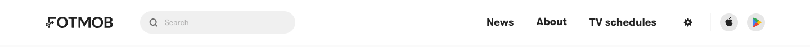

v21 · Как FotMob
Одна строка: бренд и рядом широкий поиск; справа Новости · Расписание · Фэнтези, настройки, приложения. Игр в шапке нет — выбирают на странице.
Образец — шапка FotMob (скрин 15.10)

Наша шапка по этому образцу · десктоп 1440 · кликается: игры, разделы, фэнтези